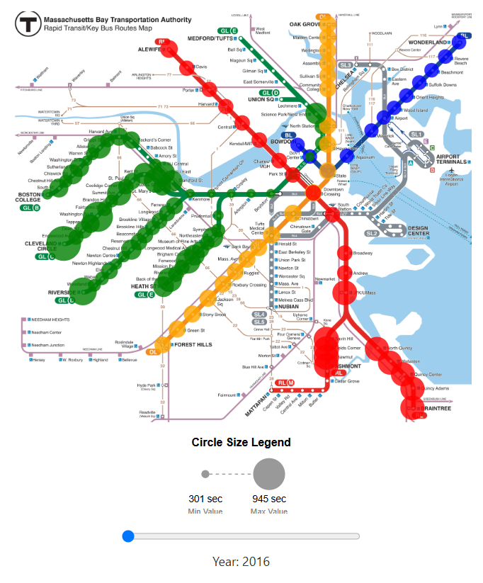
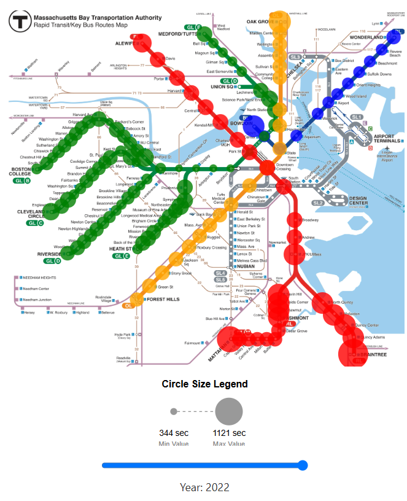
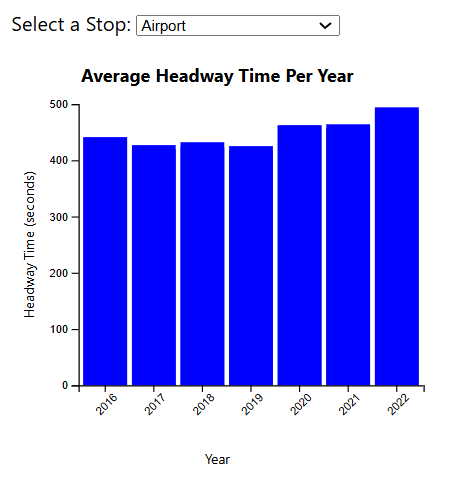
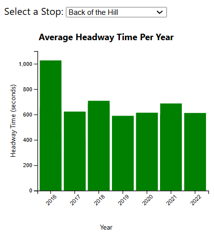
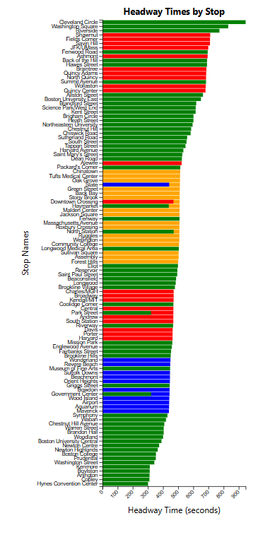
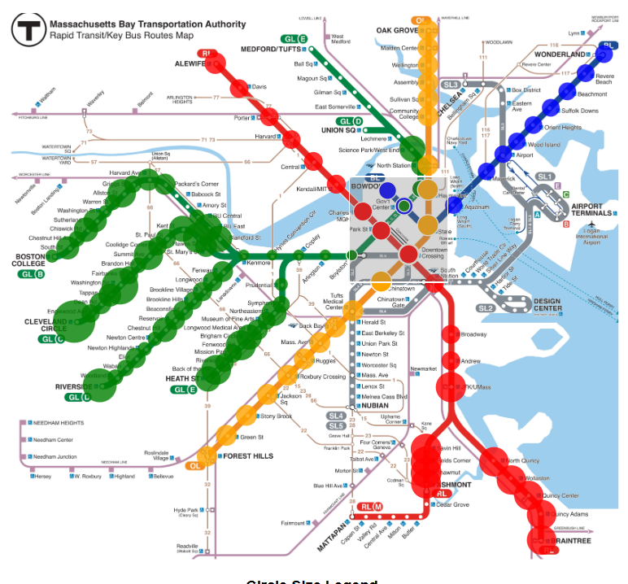
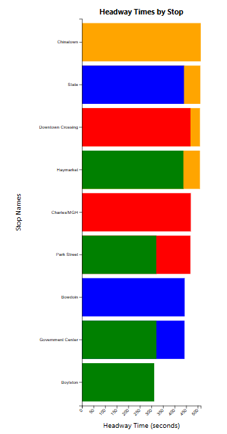
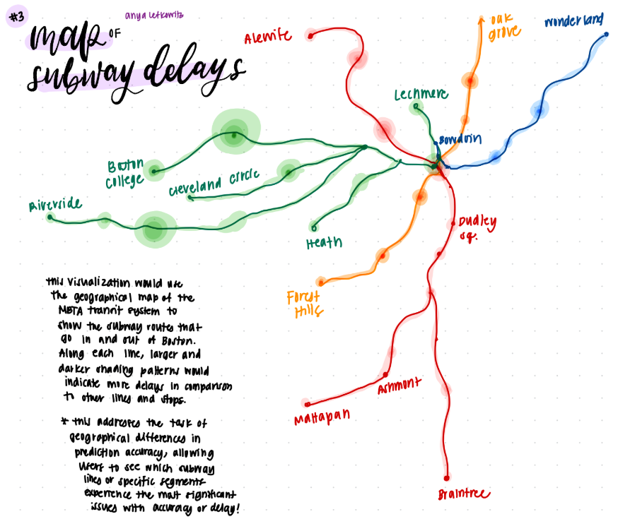
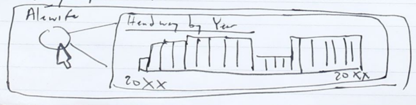
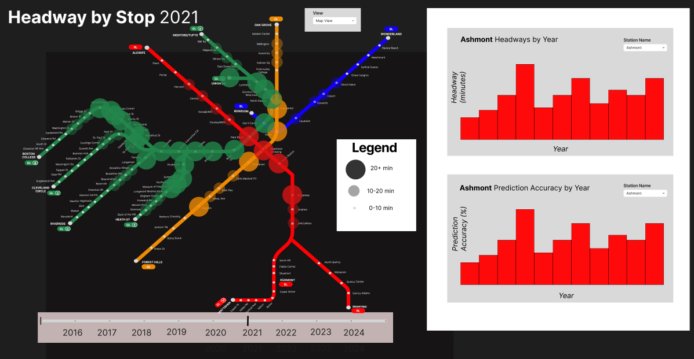

Year: 2016
Rose Nolan, Ananya Kadwe, Anya Lefkowitz
Project-long Course Project as part of COSI 116A: Information Visualization, taught by Prof. Dylan Cashman, Brandeis University.
Our visualization aims to help users understand how headways are distributed across different train lines and across the MBTA as a whole. Headways are the amount of time between train departures from the same stop. Headways can tell commuters how long on average they may need to wait for a train at that stop. We hope that our visualizations will increase a users understanding of patterns within headway data, for example being able to compare headways across stops, or being able to see where in the MBTA headways are the largest or smallest. We also hope to give users an understanding of how these headway trends have changed over time. Our visualization accomplishes these goals by offering three main visuals:
Embedded MP4 demo video using the HTML5 <video> tag. For example, this screen recording Prof. Cody Dunne made of Mike Bostock's flexible transitions in D3 slide:
The map visualization displays all of the MBTA train stops in the same configuration that they appear in the MBTA's train map. A mark is assigned to each stop. The color of the mark correponds to the color of the line that the stop belongs to (i.e. a red mark represents a stop that is a part of the red line). The size of the mark corresponds to the headway for that stop in the given year. Users can use a slider bar below the map to select the year of data that they want to be visualized. Here is an example image of the map, displaying data for 2016:
Here is an example image of the map showing data for 2022:
The stop barchart displays headway data for a singular MBTA train stop from 2016 to 2022. This enables users to see how headways change over time for any given stop. Users can use a dropdown menu above this visualization to select which train stop they want to see headway data for. The color of the bars corresponds to the color of the line that the selected stop belongs to (i.e. blue bars mean that the selected stop belongs to the blue line). The height of each bar corresponds to the size of the headway for that stop in that year. Here is an example image of the bar chart for the Airport stop:
Here is an example image of the barchart for the Back of the Hill stop:
The comparative bar chart displays the headways for each stop in the MBTA train system sorted in descending order. This allows users to see which stops have the largest or smallest headways in a given year. The year of data displayed is the same as the year of data being displayed for the map visualization. Here is an example image of the comparative bar chart when it displays all train stops:
Brushing can be used on the map visualization in order to select certain stops to be shown in the comparative bar chart. Here is an image example of brushing being used to select a subset of stops in the MBTA system:
Here is an image example of the comparative bar chart only showing data for the selected stops in the above image:
Presentation slides: access the presentation slides here.
Data used: for these visualizations we used the MBTA's Rapid Transit Headway data for the years 2016-2022.
Data types: before data processing, the data has a row for each train departure from each train stop. The has service_date (date), route_id (string), direction_id (int), stop_id (int), start_time_sec (int), end_time_sec (int), headway_time_sec (difference between end_time_sec and start_time_sec, int), and destination (string).
Data preprocessing: in order to process the data, we grouped the data by stop_id, direction_id, and destination. We aggregated the headway_time_sec column by mean to preserve the average headway for each stop. Next, we created a stop_name column in the data using the MBTA's GTFS stop.txt file. This file, once converted into a csv, can be used to match most stop_id values to the corresponding stop name. After creating the stop_name column, we created a line column by using the destination value. If the destination belongs to a specific train line, then we set the line for that row to be the same line as the destination. For rows where destination could not be used to assign line, we use the description from the stop's row in the stops.txt file. If the description contained the name of a line, then that line was used for the row's line. There were still some stops that did not have an assigned line value, so we used the assigned line values for rows with the same stop_id to assign line values for these rows. Finally, we created a year column for the data, setting it to be equal to the year that the row came from.
Since our initial sketches, our group has aimed to have a main map visualization with supplemental barcharts. One of our favorite exploratory sketches was by Anya Lefkowitz. It used the same layout as the MBTA subway map, and overlaid circular marks whose size encoded delay data, and whose color encoded the subway line that the stop belongs to.
We liked how this sketch was accessible to those that use the MBTA regularly, as they would easily be able to locate stops relevant to their commutes by using the familiar MBTA map layout. We also liked how this design was flexible; you can replace the delay data in the sketch with any data that pertains to each subway stop and it would still be elegant and easy to read.
In this visualization, we felt that using spatial data (by laying marks over the MBTA's map) was justified as headways may have spatial patterns due to certain areas of Boston using the subway more heavily than other areas. We felt it was important to allow users to see where in Boston and in the subway lines headways were larger or smaller. Encoding marks by the subway line they pertain to was also necessary as it allows users to understand how each subway line compares to the others in terms of headways. Without color coding the marks in this visualization it would be difficult to tell if in general the red line has longer headways than the orange line. With color encoding the audience can get a sense of which lines have larger headways just from what color is most prominent in the image. Since color is already used to encode the line that a stop belongs to, we used size to encode the headway data. We considered that this may cause occlusion issues in the visualization, and so in the sketch we played with the idea of having opacity decrease the further from the stop the mark extends.
Another sketch we decided to incorporate in our final design was by Rose Nolan. The idea of this sketch was to have a bar chart displaying headways over time for a certain train stop when the user clicked on that stop in the map view.
We ended up scrapping the idea of having the tooltip include a chart, but retained the idea of having a barchart to show data over time in our final mockup of our visualization. We decided to use a barchart as it is easy to see trends at a glance, and the data we are trying to display is only 2 dimensional (time and headway), so there was no need to use a more complex visualization style. Not displayed in this black and white sketch was the idea to have the color of the bars match the color of the line that the stop belongs to. This would add some visual cohesion between the map view Anya drew and this supplemental visualization.
The final mockup changed Anya's sketch from displaying delay data to displaying headway data in order to match the data that would be displayed in the barcharts. The final mockup aimed to have a prediction accuracy barchart alongside the headway barchart to add more context, but in the end we found that there was no prediction accuracy data at a stop level, so we ended up only having a headway by year barchart. In order to replace the prediction accuracy by year chart, we ended up adding a bar chart with the headways of all selected train stops sorted in descending order by headway. This allows users to see how different stops compare to one another in terms of headways, allowing more in depth exploration of the data and its trends.
In the end, we were able to create the map headway visualization to allow users to explore spatial and subway line patterns in the data. We used a slider bar to allow users to change what year the data they are viewing comes from, which lets them get a sense of how the data changes through the years. Our bar chart that contains the headways of all selected train stops allows users to easily compare how certain train stops compare to one another in terms of headways, and our bar chart that displays average headway for all train stops over time gives users an overall sense of how headways have changed over time.
If we had more time to work on this project, we would like to expand the bar chart that shows average headway over time to be able to show headway over time for a specific stop. We had the idea to use a drop down menu to allow users to select a specific stop to display data for, but we were unable to add that functionality for this assignment.
We also would like to add data for 2023 and 2024 headways. Unfortunately we had issues downloading the 2023 headway data, and the 2024 headway data was collected in an entirely different way than previous years of data and we did not have the time to merge the 2024 data with previous year’s data. If we had more time, it would have been interesting to see how the 2024 data could be cleaned in order to work with older headway data, and having 2023 and 2024 data in our visualizations would have made the visualization more relevant for current commuters.
List here where any code, packages/libraries, text, images, designs, etc. that you leverage come from.